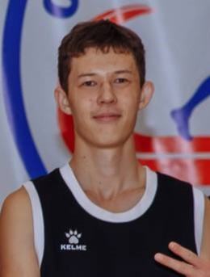
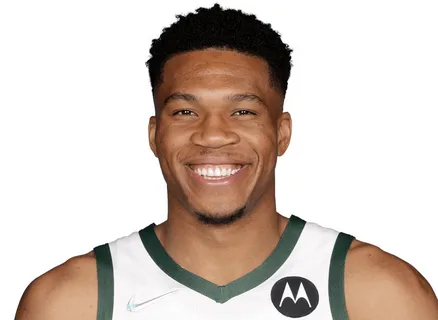
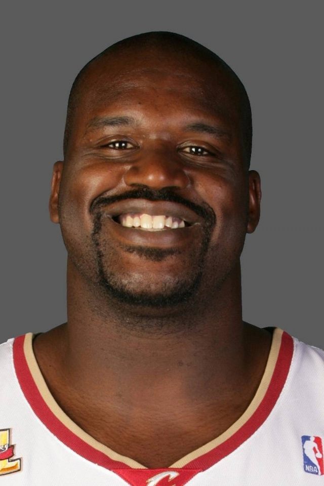

Игроки БК "АЙУЙ"
Стартовый состав:
-

Шоноев Жаргал
Номер: 25
Позиция: Разыгрывающий защ.
Рост: 188 см
Вес: 74 кг -

Осацкий Никита
Номер: 13
Позиция: Легкий Форвард
Рост: 178 см
Вес: 86 кг -

Старицын Антон
Номер: 24
Позиция: Центровой защ.
Рост: 190 см
Вес: 72 кг -

Бужинаев Олег
Номер: 7
Позиция: Атакующий защ.
Рост: 178 см
Вес: 80 кг -

Баландин Дмитрий
Номер: 22
Позиция: Тяжелый форвард
Рост: 187 см
Вес: 85 кг
Запасные игроки БК "АЙУЙ"
-
Стеффен Карри
Номер: 30
Позиция: Разыгрывающий
Рост: 189 см
Вес: 89 кг -

Майкл Джордан
Номер: 23
Позиция: Атакующий защитник
Рост: 192 см
Вес: 92 кг -

Леброн Джеймс
Номер: 6
Позиция: Легкий форвард
Рост: 198 см
Вес: 102 кг -

Яннис Адетокумбо
Номер: 34
Позиция: Тяжелый форвард
Рост: 212 см
Вес: 110 кг -

Шакил О'Нил
Номер: 10
Позиция: Центровой
Рост: 216 см
Вес: 147 кг
Контактная информация

Капитан команды Шоноев Жаргал : 89140502734

Тренер Аршинский Вадим Леонидович : 88005553535